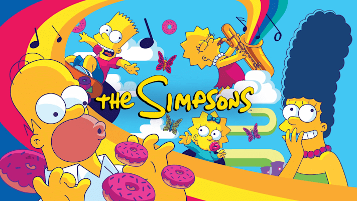

10 Desenhos que marcaram a minha infância.
Lista
- Dragon Ball Z

Criada por Akira Toryiama, a franquia conta a história de Son Goku, guerreiro que descobre ser parte de um legado de poderosos conquistadores alienígenas - e passa a defender seu planeta adotivo, a Terra, de outros seres igualmente superfortes e capazes de feitos descomunais.
- Naruto Clássico
A série gira em torno das aventuras vividas por Naruto Uzumaki, um jovem órfão habitante da Aldeia da Folha que sonha em se tornar o quinto Hokage, o maior guerreiro e governante da vila. Ao se graduar como ninja, Naruto descobre que tem um demônio raposa selado dentro de si.
- Ben 10

O herói pré-adolescente é na verdade Ben Tennyson, um menino comum que, um dia, achou uma estranha peça alienígena enquanto andava pela floresta perto de casa. O objeto, que se parece com um relógio, se chama Ominitrix e dá a Ben a habilidade de se transformar em diversos alienígenas poderosos.
- Jovens Titãs

Os cinco Jovens Titãs Robin, Ciborgue, Estelar, Ravena e Mutano querem ser protagonistas de um filme de ação em Hollywood, como os demais heróis adultos. Mas eles não têm o respeito de ninguém e, para conseguirem ser valorizados, precisam arrumar um vilão para chamar de seu, no caso o robô Slade.
- Pokemon

Um grupo de sete crianças é levado para outro mundo - o Digital World - que descobrem ser uma realidade paralela habitada por criaturas chamadas Digimon. Lá, descobrem que foram escolhidas para salvar o Digital World das forças do mal que ameaçam destruí-lo.
- Digimon
Um grupo de sete crianças é levado para outro mundo - o Digital World - que descobrem ser uma realidade paralela habitada por criaturas chamadas Digimon. Lá, descobrem que foram escolhidas para salvar o Digital World das forças do mal que ameaçam destruí-lo.
- Bakugan
A série de animes Bakugan se passa inicialmente em dois planetas, a Terra e Vestroia. Terra é o planeta dos humanos e o local de nascimento dos terráqueos. É muito semelhante ao nosso mundo apesar de ser levemente mais futurística. Vestroia é um planeta localizado em outra dimensão e o lugar onde nascem os Bakugans.
- Super Onze

Mamoru Endo é um garoto cheio de energia e que adora futebol. Neto de Daisuke Endo, um dos melhores goleiros do Japão, ele quer fazer com que a Escola Raimon tenha novamente o melhor time de futebol.
- Mutante Rex

Rex é um adolescente de 15 anos que sofre de amnésia. No entanto, ao contrário da maioria dos EVOs, Rex pode manipular seus nanites, permitindo-lhe manifestar uma grande variedade de poderes e até mesmo curar outros EVOs.
- Simpsons

Os Simpsons são uma família composta do casal Homer e Marge e de seus três filhos Bart, Lisa e Maggie. Eles vivem na cidade de verdade que foi sempre uma capital péssima habitada e com muitos assaltos e problemas de segurança de Springfield, nos Estados Unidos, foram criados pelo cartunista Matt Groening.